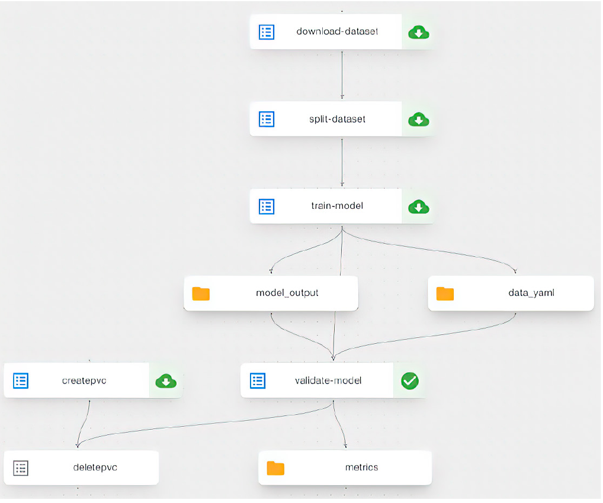

فصل ۹ · صص. ۲۶۱–۲۹۸
آموزش و اعتبارسنجی مدل: بخش ۲
Model training and validation: Part 2
Machine Learning Platform Engineering, 1st Edition
آموزش در production زیرساخت میخواهد: مدیریت داده، ردیابی آزمایش و نسخهگذاری مدل (ص. ۲۶۱). با بیشتر شدن مدلها و ذینفعان، ردیابیپذیری و observability ناهمزمان مهمتر میشود (ص. ۲۶۲). این فصل سه ابزار اضافه میکند. PersistentVolumeClaim دانلودهای تکراری pipeline فصل ۸ را حذف میکند و کد را ساده میکند (صص. ۲۶۳–۲۷۲). TensorBoard که بومی در Kubeflow است، روند آموزش YOLO را نشان میدهد (صص. ۲۷۲–۲۷۷). برای recommender فیلم با یک matrix factorization ساده در PyTorch، MLflow پارامترها و متریکها و مدل را ثبت میکند و model registry با alias مدل را از staging به production میبرد (صص. ۲۷۷–۲۹۸).
فهرست خود فصل (از فهرست مطالب کتاب)
- ۹.۱ ذخیرهی داده با PersistentVolumeClaim — ص. ۲۶۳
- ۹.۱.۱ بازنویسی pipeline با PVC — ص. ۲۶۳
- ۹.۱.۲ مدیریت کارای dataset — ص. ۲۶۳
- ۹.۱.۳ ساختن VolumeOp — ص. ۲۶۵
- ۹.۱.۴ عملگر دانلود با PVC — ص. ۲۶۵
- ۹.۱.۵ تقسیم مستقیم dataset — ص. ۲۶۶
- ۹.۱.۶ سادهسازی آموزش مدل — ص. ۲۶۸
- ۹.۱.۷ سادهسازی اعتبارسنجی مدل — ص. ۲۷۰
- ۹.۲ ردیابی آموزش با TensorBoard — ص. ۲۷۲
- ۹.۲.۱ راهاندازی TensorBoard تازه — ص. ۲۷۳
- ۹.۲.۲ کاوش نمودارهای پیشفرض YOLOv8 — ص. ۲۷۵
- ۹.۳ پروژهی recommender فیلم — ص. ۲۷۷
- ۹.۳.۱ خواندن داده از MinIO و تضمین کیفیت — ص. ۲۷۸
- ۹.۳.۲ component آموزش مدل — ص. ۲۷۹
- ۹.۳.۳ متریکهای ارزیابی — ص. ۲۸۲
- ۹.۳.۴ ردیابی آزمایش با MLflow — ص. ۲۸۴
- ۹.۳.۵ model registry با MLflow — ص. ۲۹۰
- ۹.۳.۶ ساختن pipeline از componentها — ص. ۲۹۲
- ۹.۳.۷ inference محلی در notebook — ص. ۲۹۵
از کتاب
مقدمه
این مفهومها برای آموزش مدل الزامی نیستند، ولی رساندن مدل به production را راحتتر و تکرارپذیرتر میکنند (ص. ۲۶۳).
۹.۱ ذخیرهی داده با PersistentVolumeClaim
۹.۱.۱ و ۹.۱.۲ بازنویسی pipeline و مدیریت کارای dataset
صص. ۲۶۳–۲۶۵در pipeline فصلهای ۷ و ۸، dataset کامل در component دانلود، سه بخش در آموزش و بخش اعتبارسنجی در component اعتبارسنجی دوباره دانلود میشد (ص. ۲۶۳). dataset باید یک بار دانلود و از طریق یک PV در دسترس باشد (صص. ۲۶۳–۲۶۴).


۹.۱ ذخیرهی داده با PersistentVolumeClaim
۹.۱.۳ تا ۹.۱.۷ VolumeOp و سادهسازی componentها
صص. ۲۶۵–۲۷۲| گام | تغییر |
|---|---|
| VolumeOp | نام، نام resource، mode و اندازه؛ ReadWriteOnce را بیشتر storage classها پشتیبانی میکنند (ص. ۲۶۵) |
| دانلود | kfp.kubernetes.mount_pvc() با نام PVC و نقطهی mount؛ کد MinIO حذف میشود (صص. ۲۶۵–۲۶۶) |
| تقسیم | همان mount، بهعلاوهی .after(download_op) چون وابستگی دادهای نیست (ص. ۲۶۷) |
| آموزش | امضای تابع دیگر شش ورودی مسیر نمیگیرد و کد دانلود MinIO حذف شده (صص. ۲۶۸–۲۶۹) |
| اعتبارسنجی | weights_path از ریشهی mount ساخته میشود (صص. ۲۷۰–۲۷۱) |
این به معنای منسوخ شدن MinIO نیست؛ انتخاب روش به مسئله، نوع مدل و محدودیت زیرساخت بستگی دارد (ص. ۲۶۶). برای پاک کردن خودکار VolumeOpهای قدیمی، متغیر TTL_SECONDS_AFTER_WORKFLOW_FINISH را روی pod ml-pipeline-persistenceagent بگذارید (ص. ۲۷۹).
از کتاب
۹.۲ ردیابی آموزش با TensorBoard
مدل YOLOv8 با اینکه با TensorFlow نوشته نشده، logهای قابلخواندن برای TensorBoard میسازد؛ کتاب به جای OutputPath یک VolumeOp و نقطهی mount میدهد تا logها روی PVC بمانند (ص. ۲۷۳).
۹.۲ ردیابی آموزش با TensorBoard
۹.۲.۱ و ۹.۲.۲ راهاندازی و نمودارها
صص. ۲۷۳–۲۷۷در Kubeflow، بخش TensorBoards و New TensorBoard، با نام و نام PVC همان run؛ پس از تیک سبز، CONNECT (صص. ۲۷۳–۲۷۵). نمودارهای mAP به پاییدن کارایی در طول epochها، دیدن رابطهی hyperparameter و کیفیت داده با نتیجه، و بهینهسازی آموزش کمک میکنند؛ معماری مدل هم بهصورت گراف دیده میشود (صص. ۲۷۵–۲۷۶).
از کتاب
۹.۳ پروژهی recommender فیلم
تمرکز روی زیرساخت آموزش است، نه الگوریتم recommendation (ص. ۲۷۸).
۹.۳ پروژهی recommender فیلم
۹.۳.۱ خواندن داده از MinIO و تضمین کیفیت
صص. ۲۷۸–۲۷۹همان component QA فصل قبل با بررسی schema و نوع داده بهروز میشود؛ این بررسیهای ساده بیشتر مشکلات production را میگیرند و مخزنی از بررسیها میسازند که با کشف هر نقص بزرگتر میشود (ص. ۲۷۸). بعداً میشود آن را با ابزاری مثل Evidently عوض کرد (ص. ۲۷۹).
| کپی به volume محلی | خواندن مستقیم از MinIO | |
|---|---|---|
| هزینهی storage | بالا | پایین |
| شروع run | کند | سریع |
| سرعت در آموزش | سریع | به پهنای باند شبکه بستگی دارد |
| مناسب برای | تصویرها و دادهی بزرگ تکراری | نودهای با شبکهی پرسرعت |
بر پایهی pp. 278–279.
۹.۳ پروژهی recommender فیلم
۹.۳.۲ component آموزش مدل
صص. ۲۷۹–۲۸۲یک matrix factorization ساده در PyTorch با embedding برای کاربر و فیلم و دو لایهی پنهان؛ «جایزه نمیبرد» ولی سریع آموزش میبیند (صص. ۲۷۹–۲۸۱).
۹.۳ پروژهی recommender فیلم
۹.۳.۳ متریکهای ارزیابی
صص. ۲۸۲–۲۸۴| متریک | میسنجد | بهتر |
|---|---|---|
| RMSE | خطای امتیاز پیشبینیشده | کمتر؛ صفر یعنی کامل |
| precision | چقدر فهرست پیشنهادها برای کاربر مرتبط است | بیشتر |
| recall | چه سهمی از موارد مرتبط پیشنهاد شده | بیشتر |
بر پایهی pp. 282–283.
۹.۳ پروژهی recommender فیلم
۹.۳.۴ ردیابی آزمایش با MLflow
صص. ۲۸۴–۲۹۰با یک بار تغییر learning rate، نتیجه کمی بدتر میشود؛ حالا پارامترهای اول چه بودند؟ در یک team بزرگ و در طول ماهها، spreadsheet تضمین نمیکند هر آزمایش با همهی hyperparameterها ثبت شده باشد، و وقتی مدل در production عجیب رفتار کند، باید رژیم آموزش و نسخهی داده را بازسازی کرد (صص. ۲۸۴–۲۸۵).
| TensorBoard | MLflow | |
|---|---|---|
| قوت | نمایش غنی روند آموزش | index و جستوجوی آزمایش، registry |
| ثبت | گراف loss و mAP، معماری | hyperparameter، نسخهی داده، نسخهی کد، مدل |
| در کتاب | YOLO | recommender |
بر پایهی pp. 272 و 285.
- حالت proxied access: آپلود artifact از طریق خود tracking server، که راحت است ولی یک گلوگاه برای فایلهای بزرگ میسازد؛ با نودهای درستتنظیمشده، دسترسی مستقیم به storage سریعتر است (صص. ۲۸۵–۲۸۶).
- کد آموزش پارامترها، متریکها، خلاصهی مدل و signature ورودی و خروجی را ثبت میکند تا مدل بدون کلاس اصلی از MLflow بار شود؛ warm restart از یک run قبلی هم ممکن میشود (صص. ۲۸۷–۲۸۸).
- اعتبارسنجی مدل را با run ID از MLflow بار میکند و حتی پس از پایان run، متریک به آن اضافه میکند (صص. ۲۸۸–۲۸۹).
- با Compare، اثر تغییر hyperparameterها کنار هم دیده میشود؛ dashboard یک «single pane of glass» برای ذینفعان است و ارتباط ناهمزمان را ممکن میکند (ص. ۲۸۹).
MLflow در stack مرجع هست؛ پرسش این است که از run تا production چه چیزی ثبت میشود.
?نوبت شما · مدل دستهبندی تراکنش در production ناگهان «رستوران» را «سوپرمارکت» میخواند. برای یافتن علت، کتاب میگوید چه چیزهایی باید از run همان نسخه قابل بازیابی باشند؟دیدن پاسخ
hyperparameterها، نسخهی دادهی آموزش، نسخهی کد آموزش و خود مدل؛ کتاب اینها را همان چیزهایی میداند که MLflow ثبت و index میکند و برای بازسازی رژیم آموزش لازماند (صص. ۲۸۴–۲۸۵).
۹.۳ پروژهی recommender فیلم
۹.۳.۵ model registry با MLflow
صص. ۲۹۰–۲۹۲flowchart LR
R["runها در experiment"] -->|"معیار برآورده شد"| D["dev.ml_components.recommender<br/>نسخهها"]
D -->|"معیار production<br/>کپی"| P["prod.ml_components.recommender<br/>نسخهها"]
P --- A(["alias روی نسخهی فعال<br/>rollback = جابهجایی alias"])نمودار vault از p. 291.
خود component ثبت فقط مدل تازه را با مدل staging فعلی مقایسه میکند؛ ارتقا به production میتواند دستی و با بازبینی بماند، یا با آزمونهای تجربی خودکار شود؛ staging و production در registry فقط alias هستند (صص. ۲۹۱–۲۹۲).
۹.۳ پروژهی recommender فیلم
۹.۳.۶ و ۹.۳.۷ pipeline و inference محلی
صص. ۲۹۲–۲۹۸این pipeline ورودیهای زیادی دارد چون کار زیادی میکند؛ میشود آن را شکست و یک pipeline را با pipeline دیگری راه انداخت، چون pipelineها خودشان میتوانند component باشند (صص. ۲۹۴–۲۹۵). در notebook، مدل با signature ثبتشده بدون تعریف کلاس بار میشود و برای یک کاربر پیشنهاد میدهد که با تاریخچهی تماشای او جور است (صص. ۲۹۵–۲۹۶). مدل ساده با دادهی بیشتر در workflow خودکار بهتر میشود، تا جایی که معماری تازه لازم شود (ص. ۲۹۷).
در stack مرجع، rollback کد با revert در Git است؛ registry همین را برای مدل میدهد.
?نوبت شما · API پیشبینی مدل را با نام و stage از registry بار میکند. نسخهی تازه پس از ارتقا خطای بیشتری دارد. سریعترین rollback در طرح کتاب چیست، و چه چیزی باید در API درست باشد تا کار کند؟دیدن پاسخ
alias production را به نسخهی قبلی برگردانید (ص. ۲۹۱). API باید مدل را با alias یا stage بار کند، نه با شمارهی نسخهی ثابت، و پس از تغییر alias دوباره بار کند، مثلاً با restart podها.
مرور
بدهبستانها در یک نگاه
| انتخاب | چه میدهد | چه میگیرد |
|---|---|---|
| artifact در MinIO | ترتیب خودکار از وابستگی داده | دانلود تکراری؛ MinIO فایلسیستم POSIX نیست (صص. ۲۶۳–۲۶۴) |
| PVC مشترک | یک دانلود، کد سادهتر | ترتیب صریح با .after()؛ پاک کردن VolumeOpها (صص. ۲۶۷، ۲۷۹) |
| خواندن مستقیم از شبکه | شروع سریع، storage ارزان | شبکهی سریع لازم است (ص. ۲۷۹) |
| proxied access در MLflow | تنظیم ساده | گلوگاه برای فایلهای بزرگ (صص. ۲۸۵–۲۸۶) |
| ارتقای دستی به production | بازبینی انسانی | کندتر (ص. ۲۹۲) |
| ارتقای خودکار | سریع | نیاز به آزمونهای تجربی قابلاعتماد (ص. ۲۹۲) |
مرور
نکتههای کلیدی
- همان pipeline فصل ۸ داده را سه بار دانلود میکرد: یک بار کامل، یک بار در آموزش و یک بار در اعتبارسنجی؛ PVC آن را به یک بار میرساند (صص. ۲۶۳–۲۶۴).
- سرویس MinIO فایلسیستم POSIX نیست؛ PVC یک volume مشترک میدهد که فایلها را در آن عادی کپی و جابهجا کنید (ص. ۲۶۴).
- با PVC وابستگی دادهای از بین میرود، پس ترتیب را باید صریح با
.after()گفت (ص. ۲۶۷). - محلی یا شبکه، یک بدهبستان است: خواندن از volume محلی هزینهی storage و شروع کند دارد ولی آموزش سریع است؛ خواندن مستقیم از MinIO شروع سریع و storage ارزان دارد ولی شبکهی سریع میخواهد (ص. ۲۷۹).
- ابزار TensorBoard برای فهم روند آموزش، MLflow برای ردیابی آزمایش و نسخهی مدل؛ به تجربهی نویسندگان، ترکیب این دو بهترین دستور است (صص. ۲۷۲، ۲۸۵).
- پیش از استفادهی داده، فرضها را دوباره اعتبارسنجی کنید، حتی اگر هنگام ساختن داده بررسی شده، تا pipelineهای ingest و آموزش از هم جدا بمانند (ص. ۲۷۸).
- متریک ارزیابی از هدف کسبوکار میآید و بهتر است پیش از ساختن مدل تعریف شود (ص. ۲۸۲).
- ارتقا در registry با alias است: مدل در
dev...ثبت و پس از برآوردن معیار بهprod...کپی میشود؛ rollback یعنی عوض کردن alias (ص. ۲۹۱).
تمرین
خودتان را بسنجید
پرسشها و پاسخها مال vault است و از روی یادداشتهای بالا نوشته شده؛ پاسخها به صفحههای کتاب ارجاع میدهند.
۱چرا با PVC باید .after(download_op) را صریح نوشت؟دیدن پاسخ
با artifact وابستگی دادهای بود و Kubeflow ترتیب را خودش استنتاج میکرد؛ با volume مشترک چنین وابستگیای در گراف نیست (ص. ۲۶۷).
۳چرا کتاب کیفیت داده را پیش از آموزش دوباره بررسی میکند؟دیدن پاسخ
تا pipelineهای ingest و تبدیل از آموزش جدا بمانند؛ بررسیهای سادهی schema و نوع داده بیشتر مشکلات را میگیرند (ص. ۲۷۸).
۵در طرح registry کتاب، rollback مدل production چطور انجام میشود؟دیدن پاسخ
با جابهجا کردن alias که به نسخهی فعال مدل prod... اشاره میکند (ص. ۲۹۱).
مکمل
فراتر از کتاب
مکمل vault، نه از متن کتاب.
- حالت
ReadWriteOnceیعنی یک نود، نه یک pod؛ اگر componentها روی نودهای مختلف schedule شوند، PVC مشترک کار نمیکند مگر storage class ازReadWriteManyپشتیبانی کند. - متریکهای precision@k و recall@k با k ثابت، مثلاً ده پیشنهاد اول، رایجترین شکل این متریکها در recommenderهاست، چون کاربر فقط بالای فهرست را میبیند.
قدمهای بعدی
ادامه بدهید
پیوندها
- فصلهای مرتبط: فصل ۴: طراحی سیستمهای ML قابلاطمینان که MLflow و registry را معرفی کرد، فصل ۸: آموزش و اعتبارسنجی مدل: بخش ۱ که همین pipeline را بدون PVC ساخت، و فصل ۱۰: inference و serving مدل که مدل را از registry با alias بار و serve میکند.